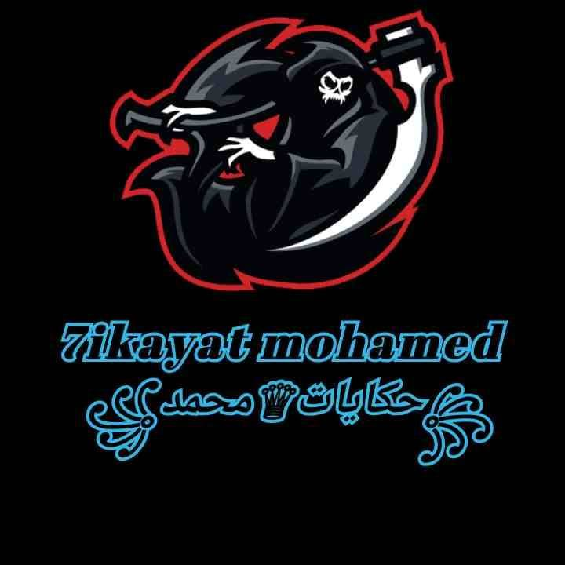

حكاية قبل النوم

مرحباً بكم هذا رابط قناتى الرجاء الاشتراك لتدعمونا
https://www.youtube.com/channel/UChNe6IDrPOLYU58XtFSb2Nw
هذا فيديو توقعات ذا سيمبسون بموت الملكة اليزابيث
هذا رابط الفيديو
https://www.youtube.com/watch?v=Ey_6nPy6VHk
نظريات هتصدمكم فى طفولكم
وأول كرتون معانا هو كرتون كريج من الجدول او((crig of the creekوااااا ( نخش فى الموضوع على طول نخش فى الموضوع ) النظرية بتقول ان كريج كان شخص عادى بس معندهوش صحاب (يعنى متوحد )طب ليه معندهوش صحاب عشان راسه كانت كبيرة وكان أسوء طالب فى مادة الرياضة وحلمه الوحيد انه يبقى عنده صحاب وفى يوم من الايام صحى كريج زى عادته ليقضى أسوء اوقات حياته فى المدرسة وفطريقة للمدرسة مكنش مركز فى الطريق فخبطتته عربية وبقى فى غيبوبة وكل احداث الكرتون ده حلم والدليل على كدة فى حلقة جيكوب من الجدول او((jacob of the creek بتبدء الحلقة لما كان كريج عايز يقص شعره بس امه كانت مشغولة فيسقط قام قسه بنفسه وده شكله قبل ما يقصه
وده بعد ما قصه
وبعدها خاف انه اى حد يشوفه عشان مينمرش عليه (على راسه يعنى) فقال لكلسى وجى بى انا هقعد هنا فى اللقطة التانية بنلاقيه راح الجدول بس بعيد عنهم فشفوا صحابه قالو مين الجميل والرائع ده وسئلوه هو انت جديد ف الجدول يسطا قالهم ايوة بس مش على طول وكل ده طلع حلم وان صحابه المقربون كلسى وجي بي هم اكتر ناس بيتنمروا عليه
....ودى كانت النظرية يلا نخش فى الكرتون التانى
2-البحث عن نيمو
النظرية بتقول ان نيمو مات هو 399 اخ واخت وامه كمان فى اول الفيلم من السمكة الشريرة وحكاية الفيلم كلها خيال فى عقل ابو نيمو وابو نيمو بيتخيل الاحداث دى كلها عشان مش عارف يستوعب الى حصل مش مقتنعين بالنظرية هقنعكو انا...
كلمة نيمو بالاتينى يعنى لا احد يعنى اسم الفيلم البحث عن لا احد